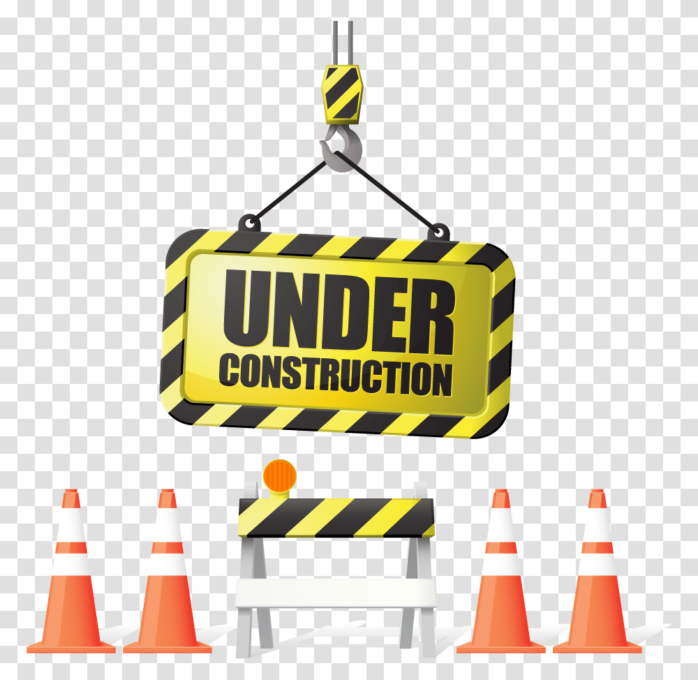

The main title of the lecture
The title of the chapter
Idir AIT SADOUNE
-
idir.aitsadoune@centralesupelec.fr
Enseignant-Chercheur :
LMF
/
CentraleSupelec
/
Université Paris-Saclay
Date
: 19/12/2025
Règles d'utilisation
Le
titre
doit exprimer l'idée centrale (pas seulement le thème)
Le
sous-titre
apporte un contexte clair (public, objectif, période)
Un seul visuel fort, pas décoratif
Mise en page aérée, centrée ou en grille simple
Une idée clé par slide
Chaque slide doit répondre à une seule question ou transmettre un seul message
Si tu hésites à expliquer $\to$ c'est qu'il y a trop d'informations
Règle d'or : si tu peux résumer la slide en une phrase, elle est bonne.
Le slide accompagne l'oral,
il ne le remplace pas
Évite les phrases longues
Utilise des mots-clés, pas des paragraphes
Ce que tu dis $\neq$ ce qui est écrit
Peu de texte, mais du texte fort
5-6 lignes max par slide
5-7 mots max par ligne
Privilégie les verbes d'action et les formulations simples
Typographie lisible et cohérente
1 police (2 maximum)
Taille minimale :
Titre : 32-40 pt
Texte : 20-24 pt
Évite les polices fantaisie
Couleurs sobres et contrastées
Fond clair + texte foncé (ou l'inverse)
2 à 3 couleurs max
Utilise la couleur pour hiérarchiser, pas pour décorer
Préfère le visuel au texte
Icônes, schémas, graphiques simples
Une image = un message clair
Pas d'images “pour faire joli”
Aligne et aère
Utilise des marges régulières
Aligne les textes et visuels
Laisse de l'espace vide $\to$ ça améliore la lisibilité
Cohérence sur toute la présentation
Même structure de slides
Même style de titres
Même codes couleurs et pictogrammes
Termine chaque slide
avec une question implicite
Demande-toi :
"Qu'est-ce que le public doit retenir exactement ?"
Si la réponse n'est pas évidente $\to$ retravaille la slide.
Merci
Version PDF des slides
Retour à l'accueil
-
Retour au plan